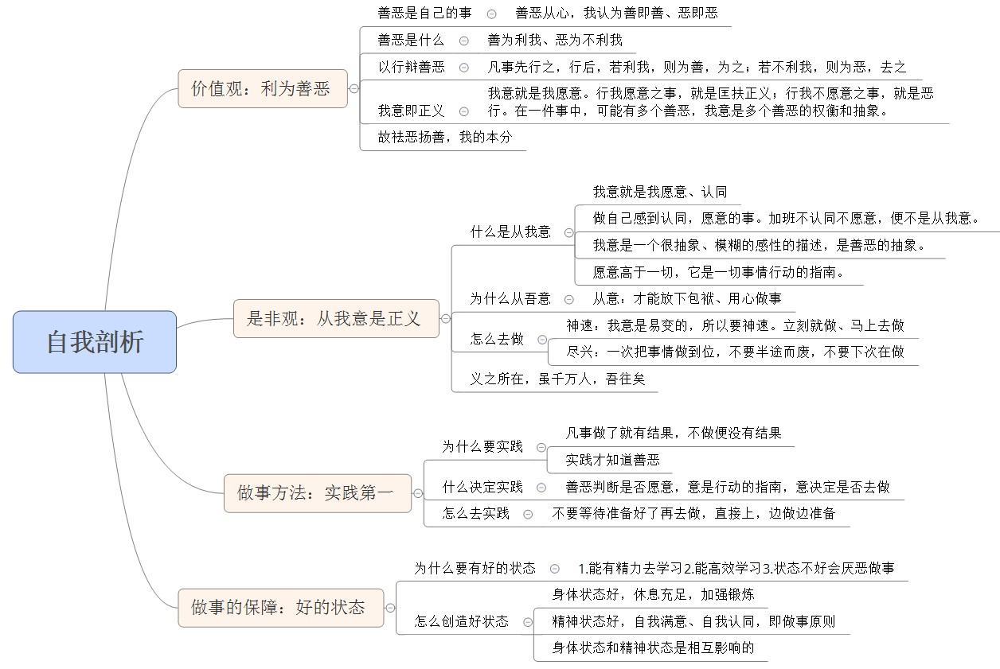

我决定把自己的是非观、价值观的捋一捋，把自己搞明白。为什么有时候会后悔，为什么为不开心，为什么会没有认同感，不能积极向上。
剖析图 
善恶是个人的事，不是公共的事。我认为善恶才是我的善恶，而不是别人眼中的善恶。 “学雷锋帮助他人是善“这是社会说的善，我试着去行这善的时候，发现既花我的精力、又花我的时间，又没有什么回报，身边朋友们还笑我傻，我自己也不开心，由此可见此善不是我的善。社会的、他人的善，不是我的善，我的善是我觉的是善。
既如此，我便思考一下善恶是什么。很快就找到了答案，利我就是善，不利我就是恶。行善就是做利我的事情，这善我是认同的，也可以不违心的做下去。如此，我便真真能做成一个行善之人、一个好人。
怎么判断一件是利我还是不利我呢，用行动去判断。做了事之后，自然知道是利我还是不利我。利我和不利我，要靠自己的行动去证实，而不是听从他人经验之言。每个人对于利我的看法都不同，他想要的和我想的还是存在的差别的。
我意就是我愿意、我认同的事情。行我愿意之事，就是匡扶正义；行我不愿意之事，就是恶行。在一件事中，从不同的角度可能有善有恶，愿意和认同是这些善恶的权衡和抽象。
所以祛恶扬善，是我的本分，也是我的天性，为了我自己，我就必须行善祛恶。必须做到勿以善小而不为。
我意就是我愿意、认同。我突然想去参加一个线下研讨会，就应该报名，请假过去，不要犹豫。不能因为犹豫、顾及而不做我愿意、我想做的事情。只要我愿意，就应该去做，而难不难、能不能做、丢不丢脸、会不会有不好的影响，这些都不是我该在意的。
做一件事，是想做的，便会积极去做，遇到问题也会主动的想办法解决，得到好的结果的几率就大些，并且能在这个过程中学到很多；不想去做而强迫自己去做，多半是觉得这么做有什么好处，但实际上，违背自己的意愿的时候，做事是很消极的，并且常常在与自己的意识作斗争，潜意识还会拖后腿，比如不愿再公司干了，潜意识会让我睡的很晚，因为潜意识不想去了，导致的结果一定是事情做不好，更拿不到前期预想的好处了。
这是我记录的一个例子
当我效率低，自认为没有做好，就会觉得有愧，就会在那里装模作样，表现的在努力做事的样子。 这时的我，大脑是空白的，人是浑噩的，时间也是过的飞快的。 最典型的场景就是工作的时候，实在提不起兴趣，不想做、见着就犯困，却强抵住下去，结果就是还是无法工作。这时继续下去只能是浪费时间了，不如浏览下网页，做点自己想做的事，与工作无关也是可以，把自己的注意力和精力提升上来后，再决定去不去做工作。但是我反对通过聊天的方式来提起精神，因为总不能精神好了就不聊了吧。 工作的时候不工作，并不算浪费。因为现在不想工作，不能把工作做好，这个时候工作，才是浪费。浪费是和时间相对的，效率不高的做事、或者十分抗拒的做着事，就是浪费。
人的想法是有时效的，可能现在愿意做、过段时间又不愿意去做了。有了想法，就赶紧去做，不要拖延。一拖延，就不会去做了
既然做，就一口气做完，不要半途而废。有时候经常做到一个小阶段，就告诉自己，算了下次来做。实际上这个事情就搁在那里，一直都没有动过了。而如果一口气做完，便学到这个东西是怎么做的，并且产生的自豪和骄傲还能激励自己维护一段时间。比如贪吃蛇的游戏，一口气做完，之后还能更新一周，把代码重构了，还加了一些功能，而直升机的项目，没有一口气做完，只能放在那里了。这样半途而废的学习计划还有很多，如bootstap的学习、设计模式的学习，都是进行一半搁了，那些一口气做完的，我现在回忆，还知道是什么，怎么做，那些进行一半搁了的，我是忘记学了那些的。
做完事后，必须要有总结。就好比学习一个新东西，一定要写博客一样。写了笔记和博客，过段时间，在回头看看，很容易捡起来，不写的，忘了就忘了，只能从头学起。
我想做的事情，哪怕再难、再有顾虑，我都必须去做。如果不是我想做的、我愿意做的，哪怕看起来再好，再有结果，我都不去做，因为它们都是看起来有好结果罢了，我是拿不到好结果的。
实践第一的意思就是，感到迷惑，就去做。做了就能解开迷惑了。
如果不做，就什么也没有，只要做了，就一定会有个结果，积极去做，如果能得到想要的结果是最好的，就算用尽全力，还是拿不到想要的结果，我也不会后悔。我也能知道是个为什么，或者说学到教训，下次做的更好。如果不做，什么也得不到，无为而为，对于我来说，是不符合的，无为的事情，都没有结果。当年我对一个喜欢的女孩子用无为的方式，只收获了后悔，后来发现将要失去，再无机会时，我才放弃无为的方式，去追、去想，虽然过程苦痛、结果也苦痛，但是我并没有后悔和遗憾，我确实尽力了。如果后悔，也只会后悔把时机拖到最后才出手。
我的人生经历、瞬间对时机的判断会又使我突然想去做一件事。既然想了，那就去做，不在乎得失，只因为想做。
不要等待准备好了再去做，直接上，边做边准备。比如，我想突然喜欢一个女孩，不要考虑钱、房子之类的问题，直接就上，边接触边了解。
1.能有精力去学习 2.能高效学习 3.状态不好会厌恶做事
身体状态，休息充足，加强锻炼 精神状态，自我满意、自我认同，即做愿意的事 身体状态和精神状态是相互影响的